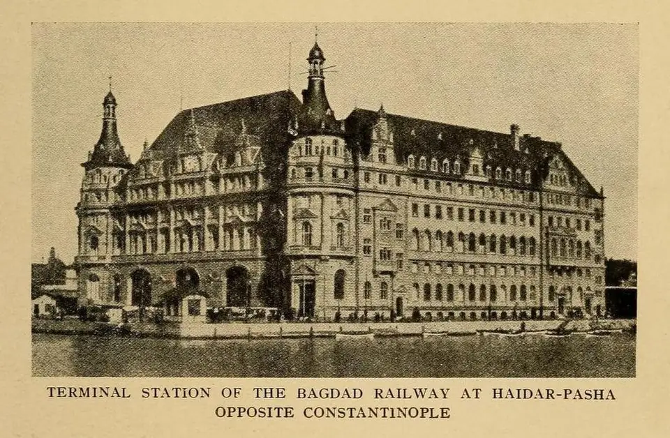

1939–1945
Haydarpaşa Garı – Polonya altınlarının trene yüklendiği yer
Alman deniz ataşesi Berlin'e haber verdiğinde Polonya'nın altınları çoktan burada İngiliz gemisinden trene aktarılmış, Suriye'ye doğru yola çıkmıştı.


- Tema
- 1939–1945
- Semt
- Kadıköy
- Dönem
- 1939
- Ziyaret
- Dışarıdan görülür
Hikâye
Eylül 1939'da Polonya'nın altınları bu garın önündeki rıhtımdan yeniden yola çıktı: özel bir Türk treniyle, bütün Anadolu'yu boydan boya geçerek Akdeniz'e doğru.
19 Eylül'de, üç gündür Kabataş açıklarında demirli bekleyen Eocene tankeri karşı kıyıya, Anadolu ve Bağdat demiryollarının başlangıç noktası olan Haydarpaşa Garı'na geçti. Büyükelçi Michał Sokolnicki, Türk hükümetinden transit izni almıştı; sandıklar gemiden vagonlara aktarıldı (kaynaklar 19 ya da 20 Eylül diyor). Sevkiyatın başında eski Maliye Bakanı Albay Ignacy Matuszewski vardı.
Nasıl gezilir
Gar yıllardır tren seferlerine kapalı ve restorasyonda: 2026'da cephelerdeki yapı iskeleleri söküldü, iç kısımda çalışmalar sürüyor; önümüzdeki yıllarda bir kültür merkezi olarak açılması planlanıyor. Gar en güzel, Karaköy ya da Eminönü'nden Kadıköy'e giden vapurdan, kuleleri sudan yükselirken görünür. Karada garın önündeki iskelenin yanındaki rıhtımda durun: gemi yükünü burada boşalttı. Kadıköy iskelesinden sahil boyunca yaklaşık 15 dakikada yürüyebilirsiniz.
Kişiler
- Ignacy Matuszewski
- Michał Sokolnicki
- Wojciech Rychlewicz
- Şükrü Saracoğlu
Konum
Kadıköy, İstanbul · Koordinatlar: 40.99620, 29.01884
Bu yerin geçtiği yürüyüşler
Yakındaki yerler
Kaynaklar
- przystanekhistoria.pl/pa2/teksty/34753,Uratowac-zloto.html
- dailysabah.com/opinion/op-ed/daring-escape-of-polish-gold-in-…
- warshipsresearch.blogspot.com/2025/03/british-steamship-eocen…
- repozytorium.uwb.edu.pl/jspui/bitstream/11320/8855/1/W_Jaskul…
- cnbce.com/haberler/haydarpasa-garinda-restorasyon-icin-yeni-t…